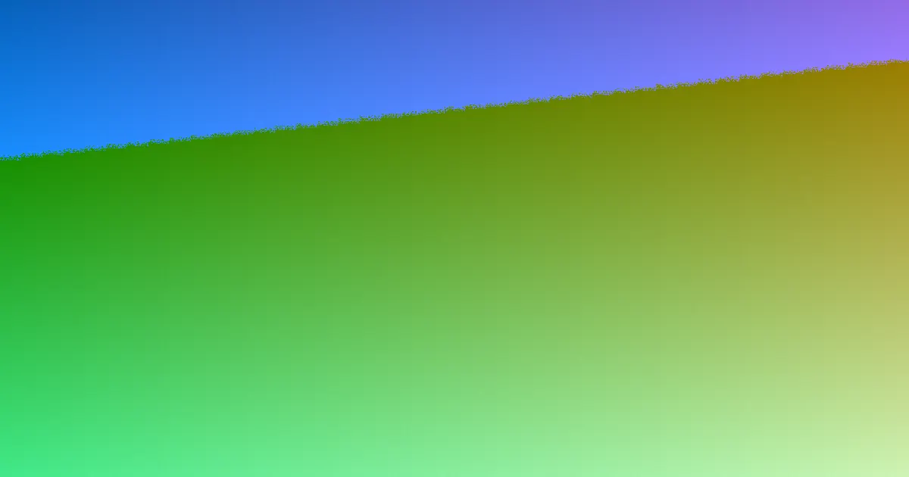

A fair retaining-wall quote should show more than the visible wall face. Compare length, retained height, wall system, excavation, spoil removal, access, soil conditions, drainage, engineering, approvals, backfill, restoration and GST. Retaining Wall Pros publishes 17 location guides covering all six Australian states and both mainland territories, while its enquiry form asks for location, project need, timing, dimensions, access and water details.
For homeowners comparing retaining wall quotes australia options, the useful starting point is a consistent project brief covering site conditions, drainage, access, approvals and the complete installed scope.
Retaining Wall Quotes Australia Explained
Retaining Wall Pros advises starting with the parts of a project that are least certain, then giving each provider the same information to assess. A visible wall length is only one input. The brief should record the approximate length, highest and lowest retained height, slope, nearby structures and the way equipment or spoil could reach the site.
Photos can make an enquiry easier to understand. Useful views show the wall line, the slope above and below it, nearby buildings or driveways, access points and any visible water problem. Gate width, stairs, side access and spoil movement can affect the work even when the finished wall appears straightforward.
- Record the location or postcode and whether the project is new, a repair, a replacement, a drainage issue or not yet decided.
- Describe ponding, outlets, erosion, staining and known stormwater connections.
- Note any preferred material, while leaving it open if the site may require another system.
Compare the installed scope, not just the facing
Concrete sleeper, timber sleeper, reinforced block, natural rock, sandstone and gabion systems can suit different site conditions. The useful comparison is not a universal rate for one material. It is the work required to make that system fit the footprint, retained height, access, drainage and landscape context.
One quote may include excavation, drainage, backfill, engineering, disposal and restoration while another prices only the visible wall. Ask each provider to identify inclusions and exclusions in the same order. Height, length, soil conditions and surcharge loads can change the total more than the facing material.
For example, a sloping block with a narrow side gate, a driveway above the wall and ponding at the lower edge needs a different brief from a short garden terrace with clear access. Ask whether the quote allows for moving equipment and spoil, dealing with water, checking the load above the wall and restoring disturbed areas. The comparison should explain those assumptions before totals are judged.
- Which wall system is proposed, and why does it suit the footprint and landscape context?
- Are excavation, spoil removal, drainage, backfill, engineering, disposal and restoration included?
- Which allowances depend on access, soil conditions or information still to be confirmed?
Treat drainage and loads as quote inputs
Water behind or around a retaining wall belongs in the initial conversation. The published guidance identifies drainage, filtration and lawful discharge as connected decisions, and asks homeowners to record ponding, outlets, erosion, staining and known stormwater connections.
Loads above the wall also deserve a clear description. A driveway, building or another terrace can add a surcharge, and a pool, boundary or the destination of collected water can change the approval questions. These are reasons to describe the whole site rather than asking for a simple lineal-metre price.
If the existing wall is leaning, damaged or no longer managing water, describe the condition and ask whether repair or replacement is the appropriate scope. Do not assume a new facing alone resolves the underlying site issue. Ask where collected water is intended to go and whether that path is included in the proposed work.
Check the address-specific approval path
Approval questions vary by address, so a remembered national height rule is not a reliable substitute for checking the relevant council or government source. Retaining Wall Pros publishes location guides for Queensland, New South Wales, the Australian Capital Territory, Victoria, Western Australia, South Australia, Tasmania and the Northern Territory.
Use the guide for the property's jurisdiction, then confirm which questions apply to the wall's height, boundary position, nearby structures, pools, drainage and retained load. The quote should make clear whether engineering, permits or other approval-related work is included, excluded or still to be confirmed.
For a separate Brisbane-focused comparison of the same preparation issues, see the Brisbane retaining-wall quote guide.
Who this checklist applies to
This guide is suited to homeowners planning a new retaining wall, replacing a failing wall, investigating a drainage or water issue, or researching options before requesting prices. It is also useful when several quotes appear difficult to compare because they describe different levels of preparation.
The checklist is less useful as a substitute for a site assessment where dimensions, access, soil conditions, surcharge loads or drainage routes are unknown. In that situation, send the known facts, label the unknowns clearly and ask what must be confirmed before the provider can state the actual scope, price and availability.
Before accepting a quote, ask for the proposed system, included preparation, unresolved site assumptions and the next approval step in writing. That record gives each comparison the same reference point and shows which questions still need an answer.
- Describe the site. Record the location, wall line, approximate length, highest and lowest retained heights, nearby structures and slope.
- Document access and water. Add photos and note gates, stairs, side access, spoil movement, ponding, outlets, erosion, staining and stormwater connections.
- Choose a comparison basis. Ask each provider to price the same wall system assumptions and identify excavation, drainage, backfill, engineering, disposal, restoration and GST.
- Check local questions. Open the relevant location or council source and confirm what approval, boundary, load and drainage issues need resolution.
- Review exclusions. Before comparing totals, separate confirmed work from allowances, unknown site conditions and items that remain outside the quote.
| Area | Ask | Record |
|---|---|---|
| Dimensions | What length and retained heights have been allowed? | Approximate length, highest height and lowest height |
| Access | How will people, equipment and spoil reach the work area? | Gate width, stairs, side access and spoil route |
| Drainage | What water collection, filtration and discharge work is included? | Ponding, outlets, erosion, staining and stormwater details |
| Approvals | Which local authority or engineering questions remain? | Jurisdiction, boundary, nearby loads and unresolved items |
Common questions
What affects the cost of a retaining wall? Height, length and wall system matter, but excavation, spoil removal, access, soil conditions, surcharge loads, drainage, engineering and approvals can change the total. Check whether backfill, disposal, restoration and GST are included.
Should quotes be compared per metre or per square metre? Neither unit is enough on its own. A useful comparison includes dimensions, site preparation, access, drainage, engineering, approvals and exclusions, because two walls with similar visible measurements can require different work.
Which details should be included in an enquiry? Include the location or postcode, project need, preferred contact method, approximate length, retained height, access or drainage constraints, timing and photos. Unknown details can be left blank and identified for follow-up.
Does approval depend only on wall height? No single remembered height rule should be relied on. The published guidance says approval varies by address, and nearby driveways, buildings, terraces, pools, boundaries and collected-water destinations can change the questions.
This guide covers preparing and comparing retaining-wall quotes across Australia, including scope, materials, drainage, access and address-specific approval questions.